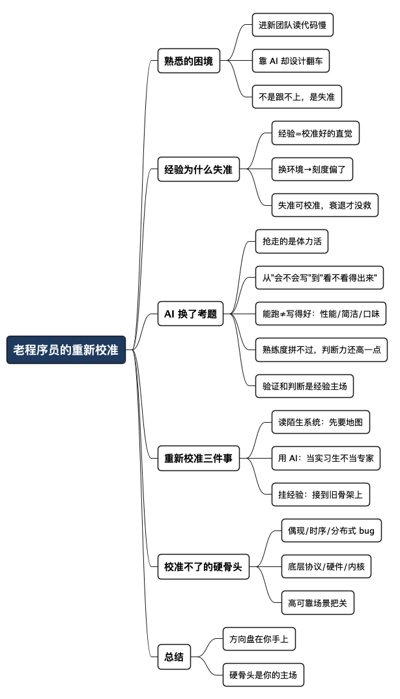

年过不惑之年的老程序员，在 AI 时代怎么重新校准
Posted on 六 17 10月 2026 in AI
| Abstract | 年过不惑之年的老程序员，在 AI 时代怎么重新校准 |
|---|---|
| Authors | Walter Fan |
| Category | learning note |
| Version | v1.0 |
| Updated | 2026-10-17 |
| License | CC-BY-NC-ND 4.0 |
年过不惑之年的老程序员，在 AI 时代怎么重新校准
大纲
展开看看
- 一个熟悉的困境：年过不惑之年进新团队，自己读代码慢，靠 AI 又翻车
- 经验为什么会"失准"：经验是一套校准好的直觉，换了环境就偏了
- AI 没有废掉经验，它换了考题：从"会不会写"变成"看不看得出来"，更深一层是"能跑不等于写得好"
- 重新校准的三件事：读陌生系统、用 AI 不翻车、把老经验挂到新坐标系上
- 什么东西校准不了，也不用校准：时序、协议、偶现 bug 这类硬骨头
- 总结：方向盘还在你手上
设想一个场景，很多年过不惑之年、刚换了环境的老程序员都不陌生。
一个模块的代码，年轻同事扫一眼就知道该改哪儿，老手却对着屏幕看了大半天还没摸到脉络。想按老办法——打开 IDE，从入口函数一行行跟下去，画调用链，啃文档——可文档一大堆，代码几十万行，调用绕来绕去，读得又慢又累，晚上回去脑子还嗡嗡的。
那就靠 AI 吧。把代码片段丢给它，让它解释、让它改、让它生成。快是真快。可没几天就容易栽跟头：AI 写的一段逻辑，本地跑得好好的，review 的时候被人一句话点破——某个异常分支没处理，上线准出事。于是那个拧巴的问题就冒出来了：自己上手嫌慢，靠 AI 又不放心，年过不惑之年，难道真的跟不上了？
心气还在，可精力、体力、脑力的转速确实有点跟不上；过去的经验，也没想象中那么管用。但我的看法是：不是经验没用了，是经验失准了，需要重新校准。 这篇就聊聊怎么校准。
经验为什么会"失准"
先得想清楚一件事：经验到底是什么。
经验不是一堆记在脑子里的知识点，而是一套被反复校准过的直觉。老司机不用盯着仪表盘就知道车速，是因为开了几十万公里，身体和路况之间建立了一套精准的映射。程序员也一样——这段代码闻着不对、这个设计将来会出事、这里八成有并发问题，这些"闻味道"的本事，是在一个特定的技术栈、一个特定的团队、一个特定的问题域里，一点点磨出来的。
问题就出在这个"特定"上。
换了新团队，新的代码库、新的技术栈、新的协作方式、新的问题域，你那套校准好的直觉，突然对不上新环境的坐标系了。就像老司机换了辆方向盘旷量完全不同的车，踩惯的刹车力度一下子不对了。经验还在，但刻度偏了。 急于求成、却又左支右绌的那种拧巴，根子就在这儿——你调用的是一套对旧环境校准的直觉，去应付一个新环境。
想通这一层，心里就松了一半：这不是衰退，是失准。失准是可以重新校准的，衰退才没救。
AI 没有废掉经验，它换了考题
很多同龄人慌，是觉得 AI 把自己赖以吃饭的本事——写代码——给抢了。
这事得分两半看。AI 确实把"从零敲代码"这件事基本接管了：样板代码、CRUD、工具函数、数据转换、接口胶水、单元测试、注释……这些过去占掉大半工时的活儿，现在你把需求、约束、接口规范描述清楚，它批量就给你生成。
但仔细想想，被抢走的是什么？是体力活。而体力活，恰恰不是老程序员的护城河——论打字速度、论熬夜、论记新框架的 API，老家伙本来就拼不过二十多岁的小伙子。
AI 没有废掉经验，它换了一张考题。过去的考题是"你会不会写"，现在的考题是"你看不看得出来"：
| 环节 | 过去的重活 | 现在的重活 |
|---|---|---|
| 编码 | 逐行把逻辑敲出来 | 审查 AI 产出：边界、安全、性能、业务是否对 |
| 调试 | 看堆栈、打断点、逐行定位 | 判断 AI 给的"怀疑点"是真是假 |
| 架构 | 自己画方案 | 从 AI 给的几套方案里，挑出适合业务的那套 |
| 协作 | 手写文档、人肉 review | 校准 AI 生成的文档，重点 review 设计和安全 |
你看这张表，右边这一列——识别幻觉、看出隐藏缺陷、判断根因真假、权衡架构取舍——哪一样不是吃经验的？AI 很擅长写出"看起来能跑、异常场景一碰就崩"的代码，而一眼看出"这玩意儿迟早要崩"，正是磨了二十年的老家伙才有的本事。
而且，"崩不崩"之外还有一层更隐蔽的：能跑，不等于写得好。 让如今的 SOTA 大模型写一些偏底层的代码，它基本都能跑通——论语言特性、论函数库用法，它熟得远比老手快，这一点真拍马难及。可那代码常常性能不行、效率有问题、堆得啰里啰嗦，入不了老手的法眼。论对语言和库的熟悉，人差 AI 很远；但论口味和判断力——什么叫干净、什么是这段代码该有的样子、哪里能更快更省——老家伙还能比它高出那么一点。
这"一点"听着不起眼，却全是经验喂出来的，也是眼下最值钱的。熟练度可以靠 AI 补，口味和判断力补不了——它得自己一行行写、一次次返工、一回回被线上折磨出来。所幸 AI 在这些地方还没能超过人，程序员这碗饭，老家伙也许还能再吃上几年。
AI 把程序员从敲代码里解放出来，却把"验证和判断"的担子加重了。 而验证和判断，恰恰是经验的主场。
所以有个判断值得记住：AI 时代对老程序员未必是坏消息。 它把你拼不过年轻人的那部分外包了，把你拼得过的那部分放大了。前提是——你得先把经验重新校准到新坐标系上。
重新校准的三件事
道理说完了，说点能上手的。要校准的主要是三件事。
1. 读陌生系统：别再一行行啃，让 AI 当向导
老办法读陌生代码，是从入口一路跟下去，像走迷宫一样把每条路都踩一遍。几十万行的系统，这么走法，走到天黑也摸不清全貌，还特别累。
换个法子会轻松很多：先要地图，再走路。
- 让 AI 画整体模块关系图、关键调用的时序图——先建立一张"全局地图"，知道大概有哪几块、谁调谁；
- 对着地图，挑业务最核心的那条主干路径，让 AI 解释每个模块的职责和边界；
- 把看不懂的概念、绕不过去的设计，直接问它要例子、要对比、要"为什么这么设计"；
- 历史工单、故障复盘、祖传代码，让 AI 帮你提炼成几条知识点，快速补上团队的"黑历史"。
这么干下来，熟悉系统的速度能明显快起来。关键是心态要对：AI 是向导，不是替你走路的人。地图它画，路得你自己走一遍——主干路径上的代码，还是得亲自读一遍、确认一遍，因为将来为它负责的是你，不是它。
2. 用 AI 不翻车：把它当实习生，不当专家
被 review 点破一次，往往就够长记性了。和 AI 打交道，核心就一条：把它当成一个手快、但考虑不周的实习生，而不是一个靠谱的资深专家。
实习生交上来的活儿，你敢直接上线吗？不敢。你会 review。对 AI 也一样：
- 需求和约束，自己写清楚。 好的提示本质上就是一份严谨的需求描述。边界条件、异常处理、性能要求、安全约束——你说得越含糊，它漏得越多。这一步别偷懒，更别外包给它。
- 生成之后，重点查它最容易翻车的地方。 异常分支处理了没？边界值对不对？并发场景安全吗？有没有 SQL 注入、越权这类安全坑？业务逻辑是不是真符合预期？这几刀砍下去，大半的"看起来能跑"就现原形了。
- 复杂的东西，别指望它。 长链路、跨模块的逻辑，AI 很容易丢上下文、自相矛盾。这种活儿让它打个草稿可以，拍板和串联必须是你。
- 拿不准的，让它自证，也让自己动手验。 让它解释为什么这么写、边界在哪、什么情况会失败；关键路径自己写个测试跑一遍。它说得出道理、测得过用例，才算数。
一句话：
方向盘在谁手上，比谁踩的油门重要。 AI 可以踩油门，但方向得你来把。
3. 把老经验挂到新坐标系上
这是最关键、也最吃功夫的一件。校准不是把旧经验扔了，而是把它重新挂到新环境的坐标上。
具体怎么做？遇到新东西，别急着当新知识硬背，先问自己一句：这玩意儿，对应我过去熟悉的哪个东西？
- 新框架的某个机制 → 它解决的问题，和你以前用过的某某是不是一类？差在哪？
- 新团队的某条规矩 → 背后八成有过一次事故，和你当年踩过的那个坑像不像？
- 某个时髦的架构方案 → 它的取舍，和你做过的那个老系统的权衡，是不是同一个道理换了身衣服？
这一问，新知识就不再是悬空的新词，而是挂在了你那套经验的骨架上。年轻人学得快，是因为脑子空、负担轻；老家伙的优势不在"学得快"，而在"连得上"——能把新东西迅速接到已有的知识网络里，看出它的本质和边界。 这恰恰是 AI 和新人都给不了你的。
AI 时代还会放大另一件事：时髦不等于合适。AI 很爱推荐新潮但未必适合你业务的方案，而容量规划、合规安全、长期可维护性、团队技术栈适配——这些判断没有标准答案，全靠在真实项目里摔打出来的手感。经验越老，这种"知道什么时候不该用新东西"的定力越值钱。
什么东西校准不了，也不用校准
最后得说句实在话，免得把 AI 捧过头：有些硬骨头，AI 到今天也啃不动，老老实实还得靠人。
- 偶现的、时序相关的、分布式的 bug。 做过通信、音视频这类系统的人都懂那种 SIP/WebRTC 媒体流偶现问题是什么滋味——几千次才复现一次，日志里什么都看不出来。这种 bug，AI 连现场都进不去，更别说定位。
- 底层协议、硬件、内核层面的异常。 协议的细节、硬件的脾气、时序的边界，需要人对它们有深到骨子里的理解，AI 给的是平均答案，碰上这些就露怯。
- 高可靠场景的最终把关。 安全、金融、通信这类一出事就是大事的地方，AI 生成的代码必须一行行人工审过，没有商量。
这些地方，经验不但不用校准，反而被放大了。越是 AI 搞不定的硬骨头，那些啃过硬骨头的人越值钱。 这也是老家伙在 AI 时代还能挺直腰板的底气所在。
总结：方向盘还在你手上
回到开头那个困境。自己啃代码嫌慢、靠 AI 又不放心——这不是年过不惑之年跟不上了，是一套对旧环境校准的经验，撞上了一个新环境。失准而已，重新校准就行。
校准的要点就三条，顺手抄走：
- 读陌生系统：先让 AI 画地图，主干路径自己走一遍。
- 用 AI：当实习生用，需求自己写清楚，重点查它最爱翻车的地方。
- 挂经验：遇到新东西先问"对应我熟悉的哪个"，把它挂到旧骨架上。
至于那些偶现 bug、底层协议、高可靠把关的硬骨头——不用校准，那本来就是你的主场。
AI 解放了我们的双手，但它给不了经验、给不了判断、更给不了那份为结果负责的担当。这些东西，从来不在键盘上，而在你走过的那几十万公里路里。
只会复制粘贴 AI 代码的人会被快速淘汰；而懂得重新校准经验的人，手里握的是方向盘。
全文思维导图
@startmindmap
<style>
mindmapDiagram {
node {
BackgroundColor #F8F9FA
RoundCorner 10
Padding 10
FontSize 13
}
:depth(0) {
BackgroundColor #1E3A5F
FontColor white
FontSize 18
FontStyle bold
}
:depth(1) {
FontSize 15
FontStyle bold
}
:depth(2) {
FontSize 13
}
}
</style>
* 老程序员的重新校准
** 熟悉的困境
*** 进新团队读代码慢
*** 靠 AI 却设计翻车
*** 不是跟不上，是失准
** 经验为什么失准
*** 经验=校准好的直觉
*** 换环境→刻度偏了
*** 失准可校准，衰退才没救
** AI 换了考题
*** 抢走的是体力活
*** 从"会不会写"到"看不看得出来"
*** 能跑≠写得好：性能/简洁/口味
*** 熟练度拼不过，判断力还高一点
*** 验证和判断是经验主场
** 重新校准三件事
*** 读陌生系统：先要地图
*** 用 AI：当实习生不当专家
*** 挂经验：接到旧骨架上
** 校准不了的硬骨头
*** 偶现/时序/分布式 bug
*** 底层协议/硬件/内核
*** 高可靠场景把关
** 总结
*** 方向盘在你手上
*** 硬骨头是你的主场
@endmindmap

本作品采用知识共享署名-非商业性使用-禁止演绎 4.0 国际许可协议进行许可。 欢迎在我的个人网站 https://www.fanyamin.com 访问原文并评论。